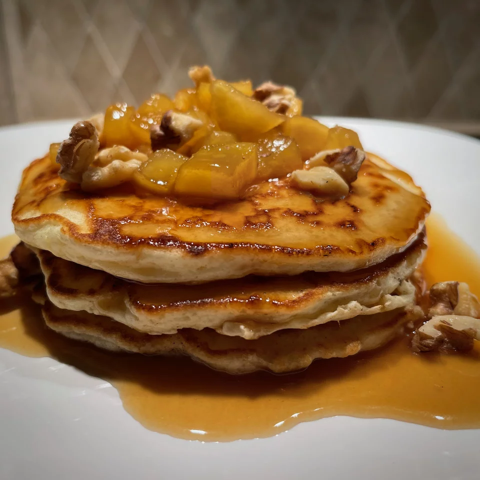

Caramel Apple Pancakes

Description:
Do you like to make pancakes on the weekend? Perfect for a late breakfast or for brunch, these tender pancakes are topped and garnished with chopped walnuts. The sauce may be made the night before, if you like. Simply cover and refrigerate, then warm up while the pancakes cook. Depending on the size of the griddle, this makes a batch of 4 or 6 pancakes.
Ingredients:
- Sauce
- 1 large apple - peeled, cored, and diced
- 2 tablespoons water
- 1 cup brown sugar
- ½ cup heavy cream
- 5 tablespoons unsalted butter, cubed
- ⅛ teaspoon salt
- 2 teaspoons vanilla extract
- Pancakes
- 1 ⅔ cups all-purpose flour
- 1 tablespoon baking powder
- 2 teaspoons white sugar
- ½ teaspoon salt
- 2 large eggs
- 1 ¼ cups milk
- 2 tablespoons unsalted butter, melted
- ½ cup chopped, toasted walnuts
Steps:
- Combine diced apples and water in a microwave-safe dish for the sauce. Cover and microwave on high power for 3 minutes. Stir, replace cover, and microwave on high until apples are fork-tender, about 2 more minutes. Drain and set aside.
- Combine brown sugar, cream, butter, and salt in a 2-quart saucepan over medium-low heat. Bring to a boil and cook, stirring occasionally, for 5 to 7 minutes. Mixture should be bubbly all over the surface. Mix in vanilla extract and cook, stirring, for an additional 2 minutes. Remove from heat and stir in cooked, drained apples.
- Preheat an electric griddle to 250 degrees F (120 degrees C). Lightly grease.
- Combine flour, baking powder, sugar, and salt in a bowl.
- Combine eggs and milk in a separate container, stirring briskly until eggs are well incorporated. Drizzle in melted butter while stirring. Add wet ingredients to dry ingredients and stir until most of the lumps are gone.
- Use a 1/4-cup measuring cup to pour batter in batches onto the preheated griddle, forming 6-inch pancakes.
- Cook until bubbles form on top of the pancakes and the surface begins to look a little dry, 3 to 4 minutes. Brown to desired doneness on the second side, 2 to 3 minutes. Keep first batch warm in a 250 degrees F (120 degrees C) oven, while the remaining pancakes cook.
- Serve a stack of 3 pancakes with caramelized apple sauce, and garnish with chopped, toasted walnuts.
Go back to main page